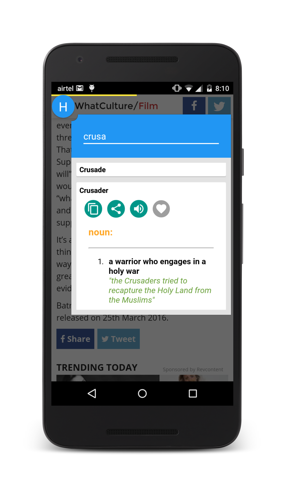

Introduction
HoverDict is an offline English dictionary accessible from a floating bubble which runs on top of your other apps. The concept is similar to chatheads used by Facebook messenger. You can look up word definitions while reading PDFs/e-books while browsing the internet and even while playing games. You can find a few app screenshots on this link.
Features:
- Offline dictionary with which you can look up the definition, type and usage of a word.
- Audio pronunciations (Requires google's text-to-speech engine)
- Auto-search words copied to the clipboard
- Invisible mode: The floating dictionary runs in the background. Just select and copy a word from any app and a floating widget will pop up with the word's meaning
Premium Version Features:
- Urban Dictionary Plugin: Search for word meanings from Urban Dictionary
- Google Search Plugin: Search for words on Google.
Credits
Developed by Miroojin Bakshi.